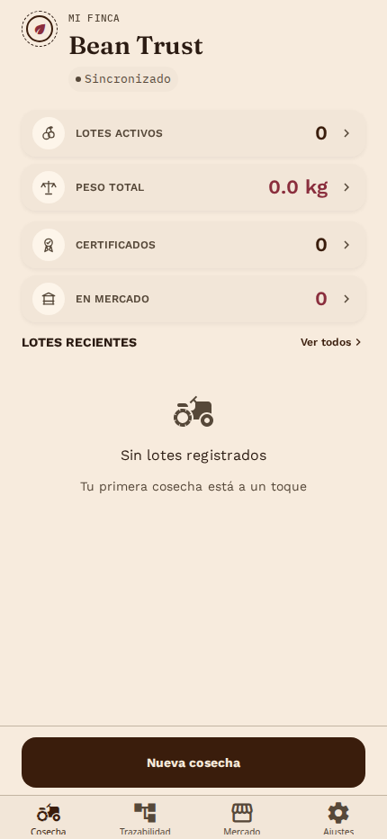
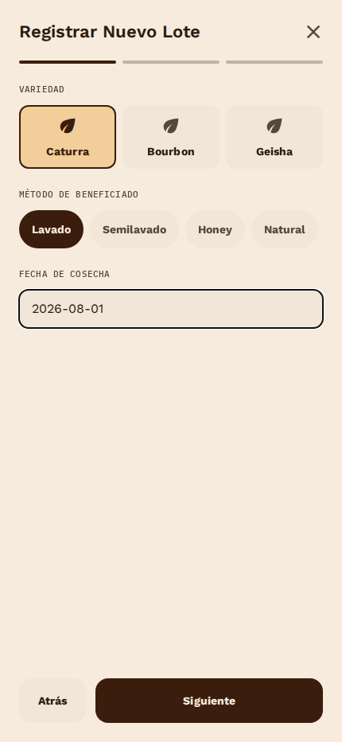
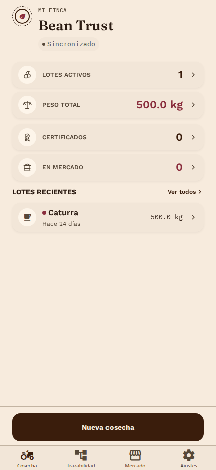
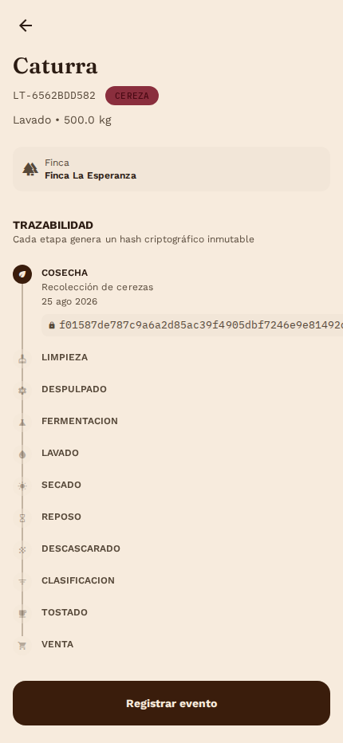
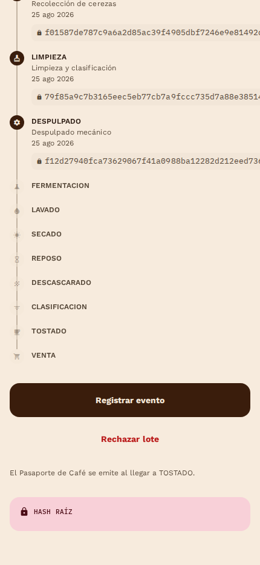
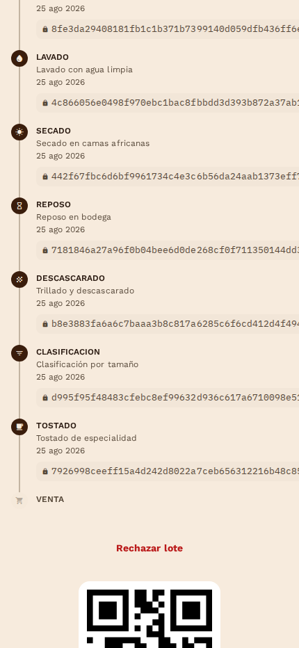
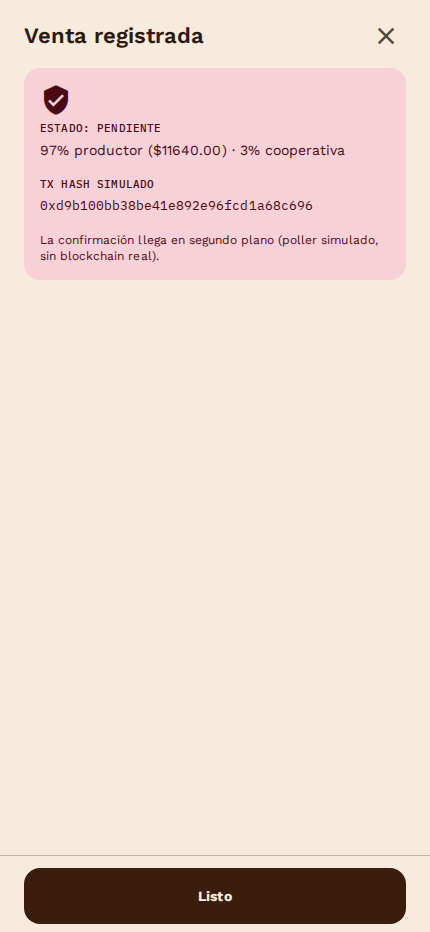
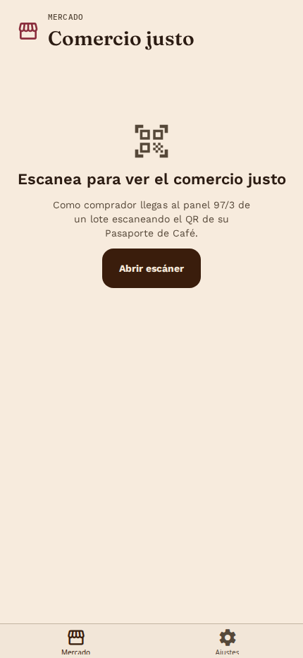
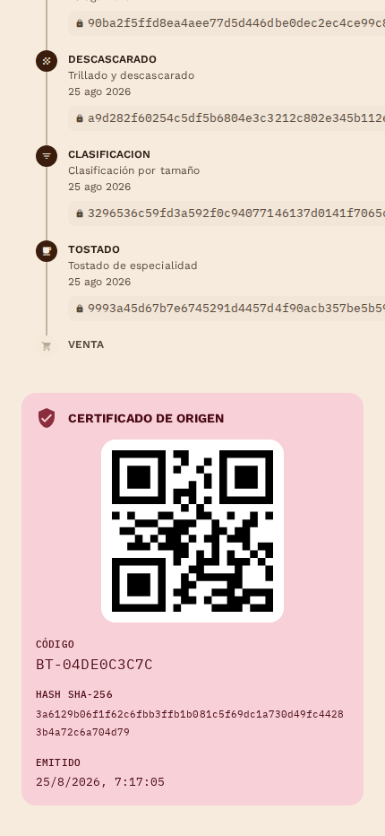
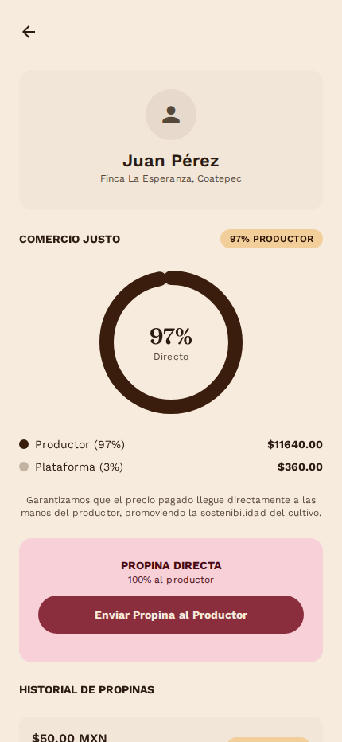

El productor ve sus lotes activos, peso total y certificados emitidos en un solo panel.
Variedad, método de beneficiado y peso — sin formularios complicados.
Ese código sigue al café en cada etapa, desde la cereza hasta la taza.
Estado y evidencia del lote quedan visibles desde el primer momento.
El productor no memoriza el proceso — solo confirma cada etapa.
Cada etapa queda encadenada por un hash: si algo se altera, se nota.
97% para el productor, 3% para la cooperativa — pago simulado, sin blockchain real.
Sin cuenta ni instrucciones — el QR lo lleva directo al origen del lote.
Variedad, finca, altitud y el reparto justo — verificable por cualquiera.
Sin comisión ni intermediario — el reconocimiento llega completo.